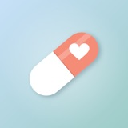
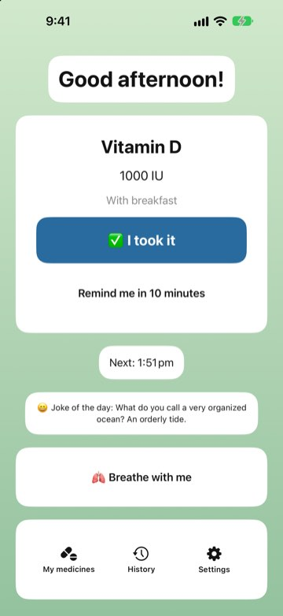
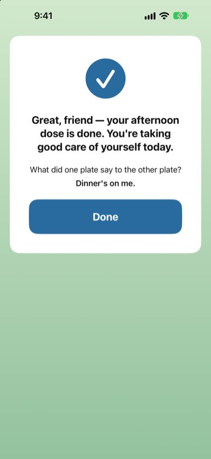
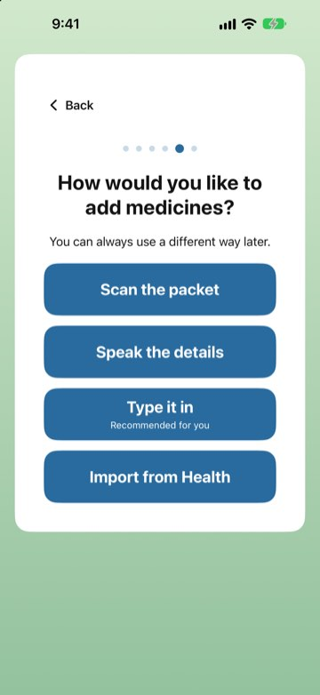
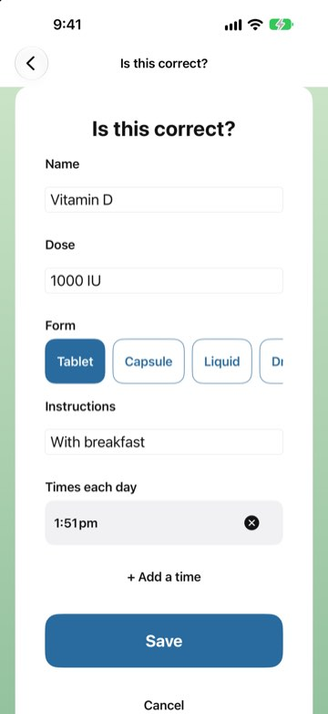
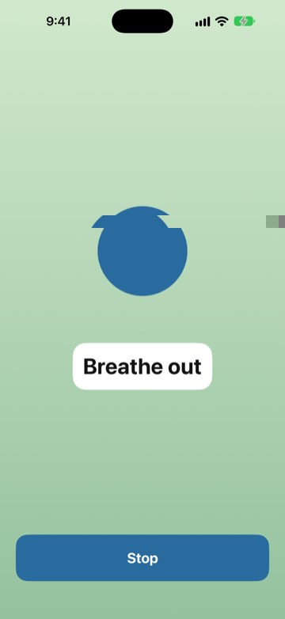
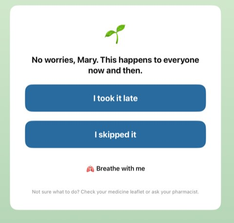
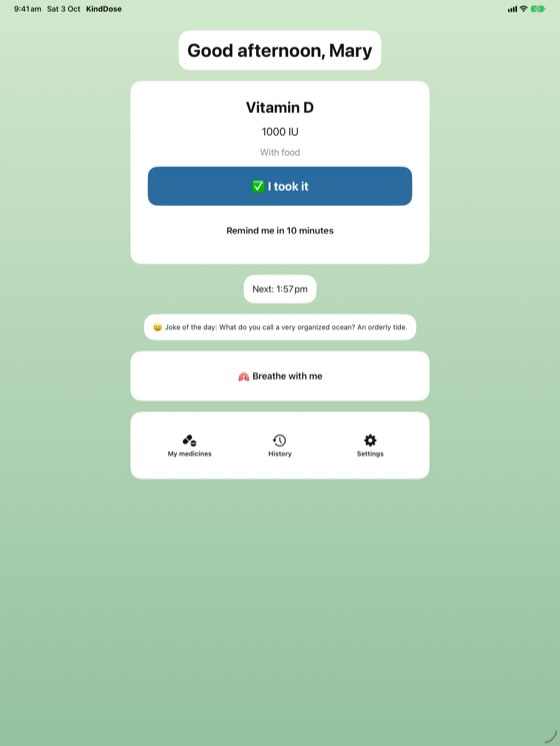

KindDose
Gentle medicine reminders, designed elder-first for everyone.
Most medicine apps feel like a nagging alarm. KindDose is built around one idea: taking your medicine should take seconds and feel good. One big button logs a dose, a kind word and a gentle joke follow, and a missed dose gets reassurance, not a red cross.



The problem
Older adults often take several medicines a day but struggle with apps that have small text, dense lists, and alarming red warnings. Missing a dose can leave people anxious or ashamed, which makes them less likely to keep using the app at all.
Design principles
- Under 5 seconds to log a dose. The home screen shows only the next medicine and one large "I took it" button. You can also log straight from the notification.
- Elder-first, accessible for everyone. Text scales to the largest iPhone sizes, every control works with VoiceOver, Voice Control, and Switch Control, buttons are at least 60 points tall, and colour is never the only signal.
- Kind, never guilt. No red crosses or broken streaks. A missed dose gets "No worries, this happens to everyone", options to record it, and a one-minute breathing exercise.
- Safe by design. Scanned or spoken medicines are never saved without an "Is this correct?" check, and the app never gives medical advice. For missed doses it points people to their leaflet or pharmacist.
- Private. No accounts, ads, analytics, or network calls. Everything stays on the device.



Features
- Adaptive first-launch setup: name, text size, "for me" or "for someone I care for"
- Add medicines by scanning a label or handwritten list (on-device text recognition), speaking it, typing it, or importing from Apple Health
- Time-sensitive reminders with "I took it" and "Remind me in 10 minutes" actions, gentle follow-ups, and an optional alarm sound that rings in Silent mode on iOS 26
- A validation message and a clean, all-ages joke after every dose
- Kind history with soft streaks ("5 days in a row 🌱"), never "streak broken"
- Home Screen and Lock Screen widgets, plus Siri: "I took my medicine in KindDose"
- Calm backgrounds that follow the time of day and respect Reduce Motion and Increase Contrast

Built with
Support
Questions or problems? Email shruthianthropic@gmail.com.
I missed a dose. What should I do?
In KindDose you can mark it as taken late or skipped. For what to do with the medicine itself, check your medicine leaflet or ask your pharmacist. KindDose does not give medical advice.
My reminders don't make a sound.
Check that notifications for KindDose are on in the iPhone Settings app. On newer iPhones you can also turn on the alarm-style sound in KindDose Settings so reminders ring in Silent mode.
Does KindDose collect my data?
No. There are no accounts, ads, or tracking, and everything stays on your iPhone.
Privacy Policy · © 2026 Shruezee Studio